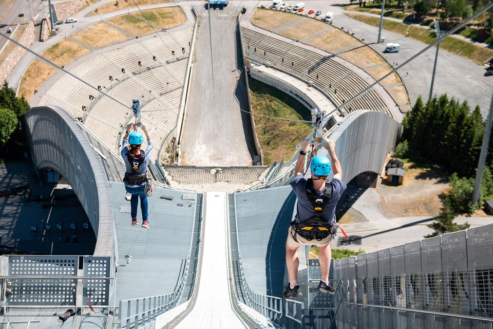
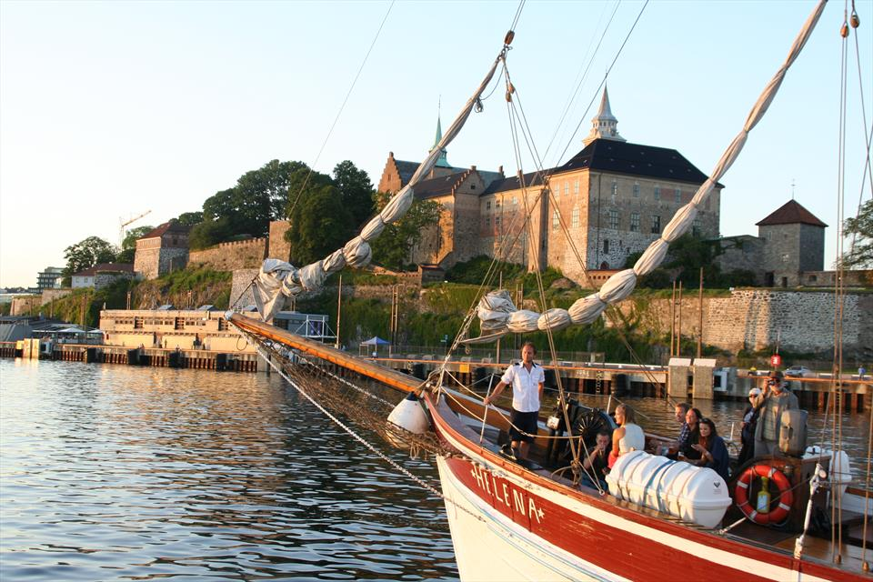
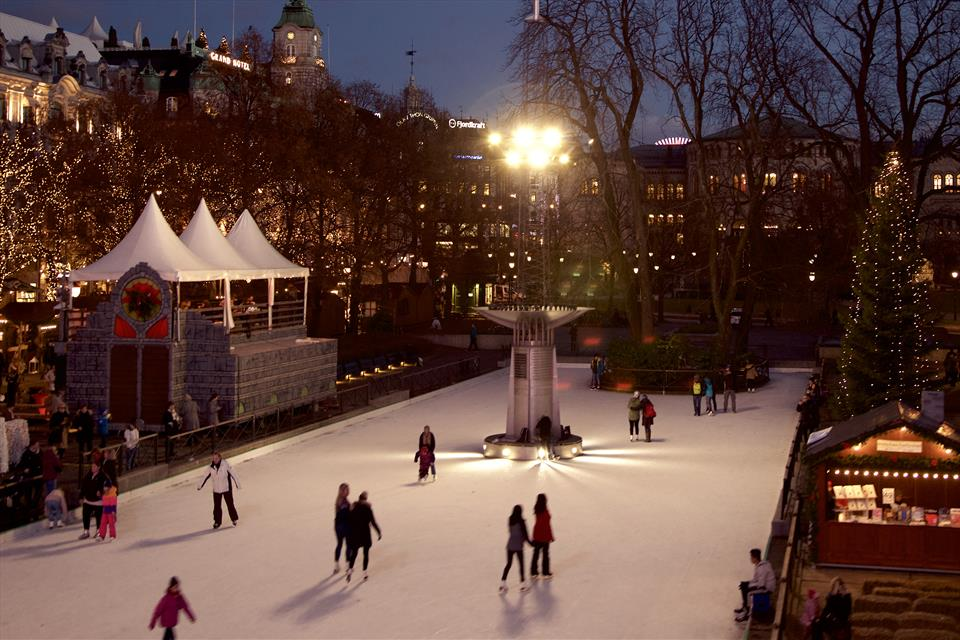

Activities in Oslo
Frognerbadet
The popular outdoor swimming pool complex Frognerbadet offers two 50-metre pools, a children's pool, and a diving tower.

Holmenkollen Zipline
Zip down the world-famous Holmenkollen Ski Jump, all the way to the bottom of the hill! Kollensvevet zipline is 361 metres of pure adrenaline, and you will get an unforgettable view of Oslo as you sail down from the city's famous landmark. The elevation drop is 107,5 metres.
Båtservice Sightseeing
Båtservice offers guided tours by boat in Oslo, all year round. The tours depart from City Hall Pier 3.
Spikersuppa Ice Skating Rink
The Spikersuppa ice skating rink in the middle of Oslo city centre is open and free for everybody.
Tusenfryd
Norway's largest amusement park, with more than 30 fun attractions, special rides for the smallest kids, and the water park BadeFryd.

Vulkan Climbing Centre
Vulkan klatresenter is an indoor climbing centre with challenges for all skill levels. The centre has climbing walls and bouldering walls.

Text and images from VisitOslo